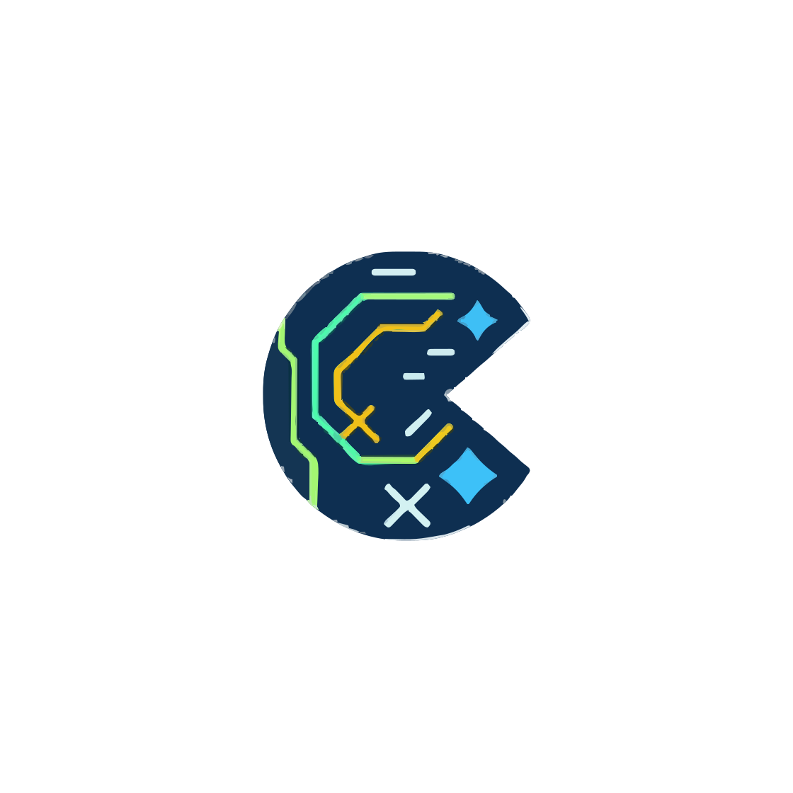
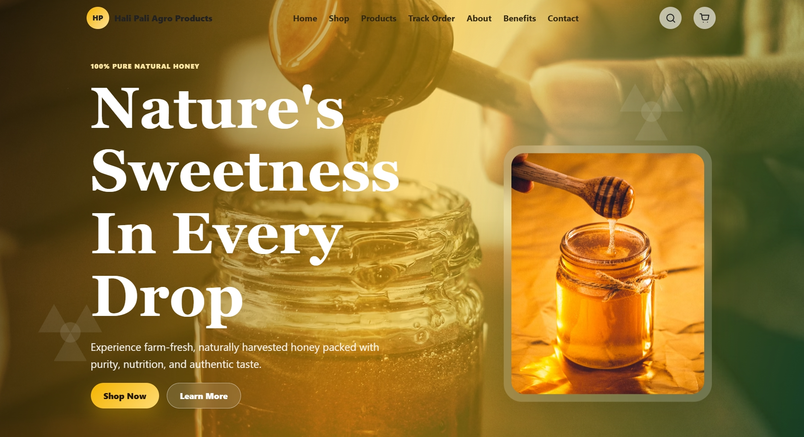
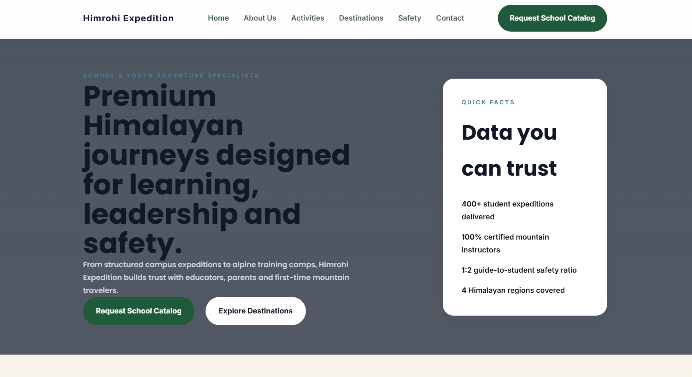

chatkode / assistant

How can I help you build today?ChatKode
An AI-powered coding assistant and chat companion for developers, learners, and problem solvers.
Explore ChatKodeProjects
A collection of products, websites, experiments, and technical projects built by Kode Developers.
Explore our work01 / Featured work
Different problems call for different tools. These are a few of ours.

How can I help you build today?An AI-powered coding assistant and chat companion for developers, learners, and problem solvers.
Explore ChatKode
A product-focused web experience for exploring Hali Pali's agro products.
Website project
A visual web experience for Himrohi Expeditions and its travel offerings.
Website projectA structured flow for turning varied sources into a clean, unified training dataset.
Technical experiment02 / Small experiments
Small projects and experiments created while learning web development.